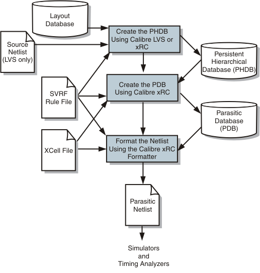

xxx
Getting Started: Parasitic Extraction Using Calibre Batch Mode
There are three steps in the overall Calibre xRC extraction flow. Each step has many possible customizations based on your particular needs.
Figure 1.
Calibre xRC Extraction

Before You Begin
Step 1 — Create the PHDB
Step 2 — Create the Parasitic Database (PDB)
Step 3 — Output A Netlist or Report
Calibre® xRC™ User’s Manual, v2021.2
Unpublished work. © 2021 Siemens
Browser Requirements